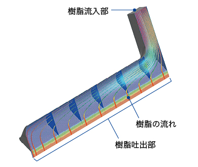
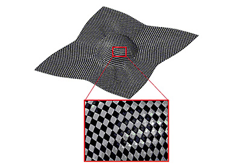
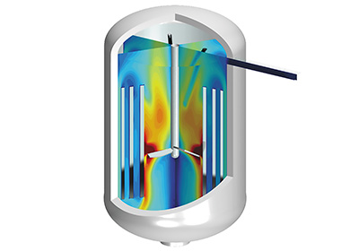
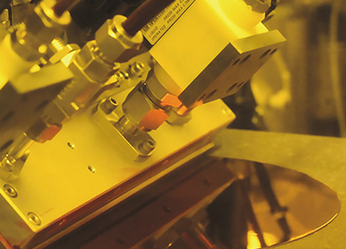
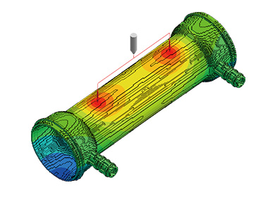
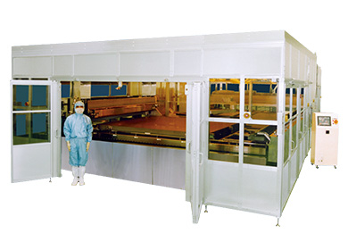

- HOME
- 研究・技術開発
- 研究・技術開発体制
- 開発・エンジニアリング組織
- エンジニアリング開発センター
エンジニアリング開発センター
エンジニアリング開発センターは高分子化学をコアとする会社の中では異色の、エンジニアリングに関する研究を行うために1960年に「工務研究所」として設立され、組織改編を経て、2001年に現在の「エンジニアリング開発センター」に改称しました。エンジニアリング共通基盤技術の研究と応用技術の開発、製造プロセスへの展開を行ない、東レおよび東レグループ各社各事業の競争力強化と先端材料の創出、早期事業化に貢献しています。

流体解析によるフィルム口金形状の最適化
CAE技術を駆使した流れ解析は、口金の最適設計に役立っています。
エンジニアリング開発センターでは、高機能フィルム製造装置、炭素繊維複合材料製造装置、ディスプレイ部材生産装置など、当社の中核をなすエンジニアリング技術を数多く生み出すとともに、これらの技術は塗布装置、検査機器、CAEソフト、精密口金・金型、医療機器など、関係会社の事業にも受け継がれています。
現在、第1、第2、第3開発室の3室体制で、生産設備、生産技術の開発を進めています。これらの開発をタイムリーかつ確実に実行するため、機構設計、メカトロニクスといった基本技術はもとより、熱流体解析、構造解析、巻取、コーティング、蒸着、プラズマ処理、微細加工、樹脂成形、計測・制御、画像処理、静電気制御、人工知能、データマイニングといった要素技術の開発・深化に取り組んでいます。
また、環境問題対策、健康・長寿社会の実現など、社会的課題の解決に貢献すべく、サステナビリティイノベーション事業への取り組みに注力しています。
現在、以下に代表されるエンジニアリング、CAE、計測・制御・画像処理、表面処理に関する基盤技術の研究と応用技術の開発、製造プロセスへの展開をおこなっています。
（１）社内製造プロセスの独自な機器、設備、生産技術の研究開発
合成繊維製造設備、フィルム製造設備、炭素繊維製造設備および、その複合材料成形設備、ディスプレイ部材製造設備、医療器材製造設備、水処理膜モジュール製造設備など
（２）CAE （Computer Aided Engineering） 技術の深化と応用技術の研究開発
樹脂製品・炭素繊維複合材料製品設計CAE、プロセス・製造設備設計CAEなど
（３）社内生産プロセスに必要な測定・検査・制御技術、静電気・表面処理技術の研究開発
フィルム、炭素繊維、ディスプレイ部材などの測定・検査装置の開発、検査・画像処理技術、計測・制御技術、静電気・表面処理技術の研究開発など

メゾスケール解析による賦形工程の最適化
織物基材を構成する繊維束の動きまで再現できる解析技術は、皺など賦形不良の発生メカニズムの理解や最適な賦形工程の提案に役立っています。

熱流体解析による撹拌の最適化
液の混合や反応を目的にさまざまな撹拌槽が用いられています。熱流体解析は液の特性や撹拌の目的ごとに撹拌翼形状やプロセス条件などの最適化に役立っています。

ウェハ基板塗布装置
表面張力を応用した独自のスリットノズル設計技術により、角型基板だけでなく、円形状のウェハ基板にも液を無駄にすることなく、高精度に塗布することが可能です。東レエンジニアリングより販売しています。

人工腎臓モジュールの開発
人工腎臓モジュールの設計では、血液や透析液の流れだけでなく、容器の射出成形における樹脂流動にも解析技術が活かされています。また、モジュールの組み立てには高度な自動化技術をベースにした生産装置が用いられています。

ディスプレイ部材用塗布装置
超大型のガラス基板に対して、非常に高速で均一なペースト塗布技術を開発し、ディスプレイ部材用塗布装置として商品化しました。